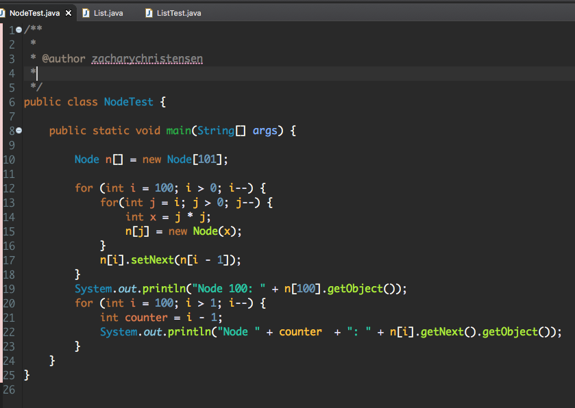

Ex 1: For each of these pre-computer data structures, describe the problems they solve and any associated algorithms they use.
- List: Takes something that is disorganized and makes it more organized in the format of a list of items.
- Chart: Displays data in a more visually appealing way to help with organization.
- File cabinet: Give you the ability to sort and store files in such a way that makes them easily accessible.
- Dictionary: List of words, sorted alpabetically, to help find the definition and correct spelling.
- Map: Organizes locations in such a way that makes them easier to find.
- Rolodex: A list that has all of your contact information in one place. Sorting alphabetically increases productivity.
- Library: A collection of books/ magazines that are stored in one location. Typically sorted alphabetically and also by type.
- Calender: Organizes time. You can have all of your appointments/ events in one place to better keep track of time.
Big Factorial
Ex 2: Test your environment by writing a static method that takes positive integer n as input and outputs an array of n random integers in the range 0 → 1,000,000. Test this method by calling it on n = 100 and printing the result.
Ex 3: Using only the Node class, build a linked list that stores all the squares from 1 to 100. Then migrate through the list and print out the squares.



public class NodeTest {
public static void main(String[] args) {
Node n[] = new Node[101];
for (int i = 100; i > 0; i--) {
for(int j = i; j > 0; j--) {
int x = j * j;
n[j] = new Node(x);
}
n[i].setNext(n[i - 1]);
}
System.out.println("Node 100: " + n[100].getObject());
for (int i = 100; i > 1; i--) {
int counter = i - 1;
System.out.println("Node " + counter + ": " + n[i].getNext().getObject());
}
}
}